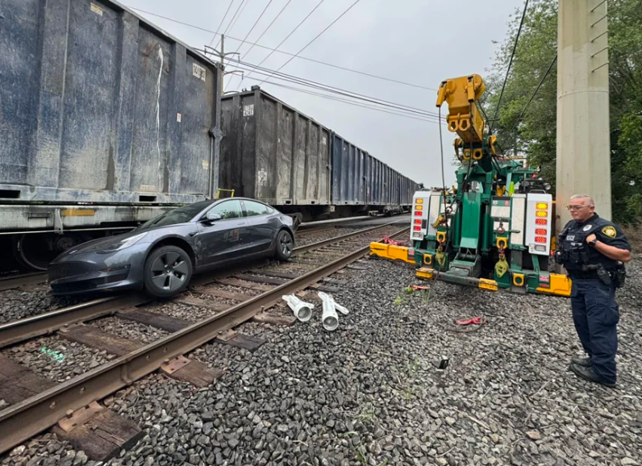

Tesla Full Self-Driving vs. trains.

Tesla’s Full Self-Driving has a talent for doing impressive things and then immediately forgetting what a railroad crossing is. You know: the place with flashing lights, big gates, and a very direct message from society that says “a train will win this argument.” Multiple drivers have reported moments where FSD didn’t seem to treat those warnings as urgent, forcing humans to step in with the ancient safety technology known as “brakes.”
This is software that’s marketed as confident enough to handle “almost anywhere with your active supervision,” yet it can apparently look at a crossing arm coming down and think, “interesting décor.” Reports described cars failing to react to flashing signals, creeping forward at the wrong moment, or stopping in awkward places that no one wants to stop when a train is nearby. It’s less “robot chauffeur” and more “robot intern experiencing trains for the first time.”
The broader issue is not that the car makes mistakes (everything does), but that these are the kind of mistakes where the penalty is getting turned into modern art by several thousand tons of freight train. Regulators have said they’re aware of FSD safety concerns more broadly, and the train-crossing reports are a great reminder of why camera-only “it’ll learn” approaches can get real weird in rare, high-stakes edge cases. If the future is self-driving, it probably shouldn’t require the driver to be the dedicated “train spotter.”
Source:
nbcnews.com